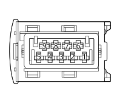

F011 RIGHT HEADLAMP (FRONT)
- Path
- Electrical equipment > 3 CONNECTORS > F EXTERIOR LIGHTS > F011 RIGHT HEADLAMP > F011 RIGHT HEADLAMP (FRONT)
- Kind
- connector pinout (pin -> wire colour -> other end)
- Applies to
- engines: 2.0 16V JTD, 2.2 16V JTD; all production periods; only with equipment: Gas discharge headlamps and MY 2005
- Interactive page
- https://sloeber94.github.io/elrnDB-fUlss/en/#/179010237
Applies to: engines: 2.0 16V JTD, 2.2 16V JTD; all production periods; only with equipment: Gas discharge headlamps and MY 2005

Wiring | Colour |
|---|---|
NERO (black) |
Pin | Cable | Destination | |||
|---|---|---|---|---|---|
Sec.. | Colour | Node | Connect. | Pin | |
1 | 1,5 | 2702 | 26 | ||
2 | 1,5 | 2802A | 5A | ||
3 | 0,5 | 2604 | 11 | ||
4 | 2,5 | GV - M2615 | X | 1 | |
5 | |||||
1 | |||||
1 | |||||
2 | |||||
1 | |||||
1 | |||||
1 | |||||
1 | |||||
See K001 HEADLAMP ALIGNMENT CORRECTOR FRONT POTENTIOMETER (CAF) | 1 | ||||
See K001 HEADLAMP ALIGNMENT CORRECTOR FRONT POTENTIOMETER (CAF) | 2 | ||||
2 | |||||
26 | |||||
5 | 0,5 | 6610B | 3 | ||
6 | 0,75 | 2063 | 13 | ||
7 | 0,5 | 276X | X | 7 | |
1 | |||||
See K001 HEADLAMP ALIGNMENT CORRECTOR FRONT POTENTIOMETER (CAF) | 4 | ||||
See K002 HEADLAMP ALIGNMENT CORRECTOR REAR POTENTIOMETER (CAF) | 4 | ||||
8 | 0,5 | 288 | 6 | ||
9 | 0,5 | C2615 | X | 9 | |
8 | |||||
1 | |||||
3 | |||||
20 | |||||
Topics linked from this page (21)
- 12 FRONT
- B001F ENGINE COMPARTMENT JUNCTION UNIT (FRONT)
- B001G ENGINE COMPARTMENT JUNCTION UNIT (FRONT)
- C011C RIGHT FRONT EARTH (FRONT)
- D001 FRONT/DASHBOARD COUPLING
- D004 FRONT/ENGINE COUPLING
- F010 LEFT HEADLAMP
- F011 RIGHT HEADLAMP
- H015 HEADLAMP ALIGNMENT CONTROL
- I010 BONNET RELEASE SWITCH
- I035 Safety switch on brake pedal for cruise control
- J035 PASSENGER COMPARTMENT AIR FAN RELAY
- J148 Gas discharge headlamps relay
- K001 HEADLAMP ALIGNMENT CORRECTOR FRONT POTENTIOMETER (CAF)
- K002 HEADLAMP ALIGNMENT CORRECTOR REAR POTENTIOMETER (CAF)
- K021B RIGHT BRAKE PAD WEAR SENSOR (SWITCH) (FRONT)
- K026 Engine coolant level sensor
- N015 WINDSCREEN WIPER MOTOR
- N025 HEADLAMP WASHER PUMP MOTOR
- P005 SINGLE TONE HORN
- P090 ALARM SIREN